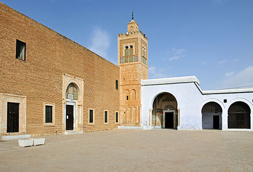
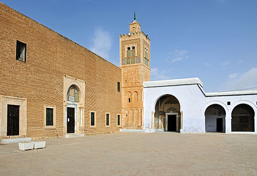

Kairouan est une ville du centre de la Tunisie et le chef-lieu du gouvernorat du même nom. Elle se situe à 150 kilomètres au sud-ouest de Tunis et cinquante kilomètres à l'ouest de Sousse. Peuplée de 139 070 habitants en 2014, elle est souvent désignée comme la quatrième ville sainte (ou sacrée) de l'islam et la première ville sainte du Maghreb.

Fondée par Uqba ibn Nafi (670), Kairouan était une base militaire qui permettait aux Arabes de surveiller les tribus berbères et de préparer leurs expéditions à travers l'Afrique du Nord, à l'abri des attaques des garnisons byzantines de la côte. Capitale de l'Ifriqiya, Kairouan brille d'un vif éclat à l'époque des Aghlabides (800-909).Tombée définitivement en décadence à partir de l'invasion des Banu Hilal (1057), Kairouan est presque déserte au xive s. Husayn ibn Ali, fondateur de la dynastie husaynite, restaure la forteresse et de nombreuses mosquées (1re moitié du xviie s.). Détruite en 1740, la ville est reconstruite peu après et redevient une cité active du beylicat de Tunis.

Le « tapis de Kairouan » voit sa fabrication commencer réellement au xixe siècle et la ville reste le principal centre de fabrication du pays. Au début du xxe siècle, la qualité du tapis se dégrade en raison du mauvais usage des teintures artificielles, ce qui conduit une famille kairouanaise à produire le alloucha.Le makroud est une pâtisserie maghrébine introduite à Kairouan et en Tunisie par la dynastie des Aghlabides. Il est composé de semoule fourrée d'une pâte de dattes et trempée dans du miel ou du sirop de sucre.


 
